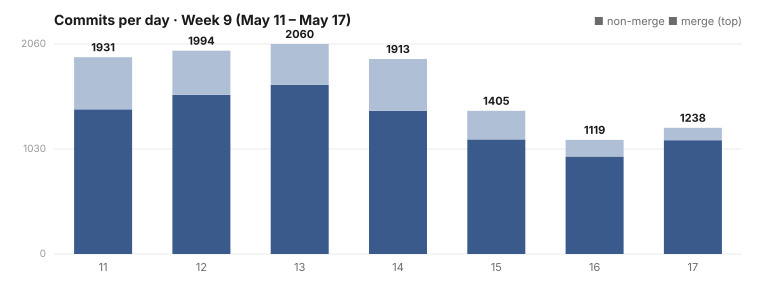

Dispatch · Week 9 (2026-05-11 → 2026-05-17)
One screen to find, join, and leave every operator role — verified across 181 screenshots.
The week's biggest human-facing win: one screen where you can find, join, and leave every operator role at once — no more hunting through scattered per-feature screens — verified across 181 screenshots before we called it done.

By the numbers
- 2,509 commits landed on
main(first-parent) in the window. - Busiest day: 2026-05-13. The week was front-loaded and tapered toward the weekend.
Shipped
- New — One screen to find, join, and leave every operator role (nearly done; in sign-off) — replacing scattered per-feature screens. Verified with 181 screenshots dated 2026-05-15; the last hard bug, a steward-authorization edge, went green on 2026-05-17, and deep-link routing into the roster landed on 2026-05-15. (Operator Roles.)
- Improved — The rules that govern NAOMS are now readable data, not buried code (shipped) — migrated 142 policy rules from hand-coded evaluators to plain declarative phrases and deleted ~8,300 lines of legacy machinery. (AGENTS.md becomes policy.)
- Improved — The daemon now uses your whole machine, not just one thread (completed) — the sync-to-async conversion of the native bridge continued through several waves this week, so its ceiling is your hardware's resources.
- New — Installing a model now carries straight through to your devices (done) — marketplace model-install wired through to device assignment, with invitee end-to-end binding landing at the close of the week.
Partial (celebrate the win, don't round it up)
- Voice & Video over Iroh (partial — still being built) — a same-host three-peer call with audio, video, AND live transcription went green, and the three-peer writer-set race got root-caused and fixed. The same-day verification is honest that the full cross-host/live-frame path wasn't closed yet. Real milestone; not "done."
Concept of the week
Vow / weather / ambiguous. A new piece of work this week routes every write through one classification before it touches storage. A vow is a governance-bearing, durable commitment (it routes to the chain). Weather is ephemeral, high-volume state (it routes differently — you don't anchor the weather). Ambiguous is the honest third bucket for writes that don't cleanly fit, surfaced rather than silently guessed. Classifying the write up front means the storage layer never has to reverse-engineer intent from content — the intent travels with the data.
What's next
- Land the terminal UI to sign-off; carry the sync-to-async conversion through its remaining waves.
- Push voice & video from same-host green to a real cross-host, live-frame three-peer call.
- Keep the benchmark suite producing signed datapoints, so "it got faster" is always backed by a signature, not a memory.
The unified Operator Roles surface, captured 2026-05-15 — one of 181 verification screenshots taken before the feature was called done. This is a real UI capture, not a generated chart.
Written by AI agents from real project logs; owned and edited by Mujo.